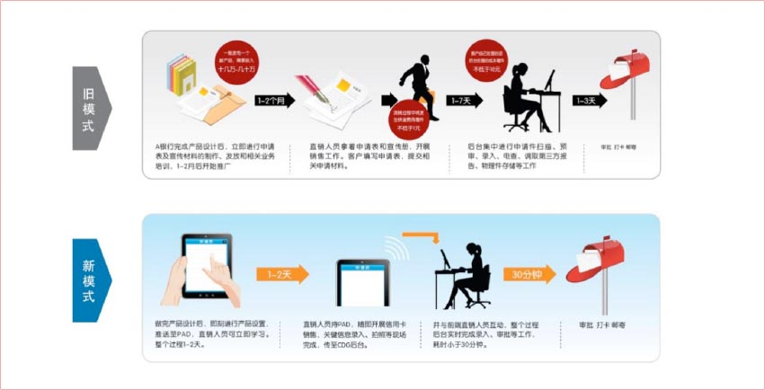
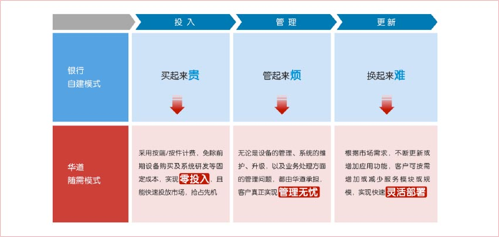
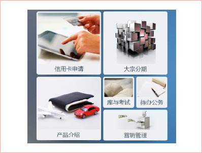
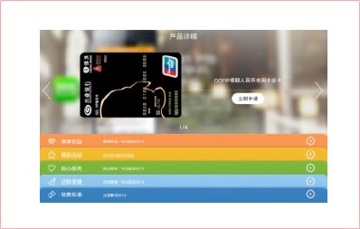
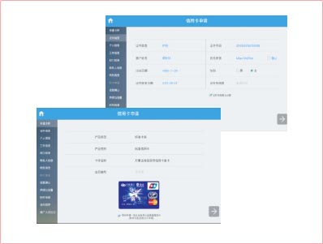
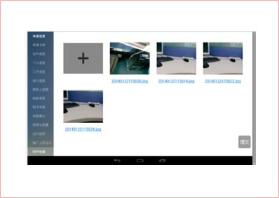

系统特点
安全合规
数据安全：通过对设备、传输过程、用户管理、操作管理等环节进行加密、控制，保障申请数据在整个流程中的安全。
设备安全：使用专用定制设备，对硬件、底层系统进行了高安全级别的定制，即使设备丢失，他人也无法使用。
传输安全：采用虚拟专网方案，利用AAA服务器或者具备AAA功能的路由器实现二次认证，并在运营商与后台之间建立L2TP隧道，提高数据传输的安全性。
合规：业务流程的设计符合银监会《商业银行信用卡业务监督管理办法》规定的相关要求。
快速有效
- 通过前后一体的业务流程，大幅度提升申请处理的时效
- 实时发布新的优惠商户和优惠信息，有力促进信用卡销售
- 整个申请过程高效透明，随时查询
- 前后台一体的销售情况实时统计，业绩情况随时掌握
- 每个销售人员的状态一目了然，工作安排及时准确，考核快速有效
- 有效控制伪冒申请、虚假申请，防止买卖表、串表、盗取和伪造客户资料等行为
- 规范申请数据的合规性和有效性，有效申请比例可达90%以上
随需模式灵活部署
华道信用卡移动销售终端服务，包括了联想乐Pad硬件设备的管理和维护、终端业务系统、后台管理系统，以及BPO业务处理等完整的服务内容。采用随需模式，根据客户的需要，提供相应的服务规模和服务模块，解决了自建模式所面临的一系列问题。
销售管理无限可能
根据既定营销策略及主视觉形象，对信用卡新品特性、业务流程、申请表、销售系统人员考核办法等变量进行参数的配置，对新品进行定制化管理；销售团队组织结构清晰，精确定位销售人员所在地，销售过程及业绩电子化，易于即时统计，分析和维护，助您灵敏应对市场反应，为信用卡销售创造无限可能！
核心功能
客户端界面展示
- 用户登录
用户启动客户端系统后需要录入用户名和密码才可进入系统。用户登录信息需在服务端设置并开通才能启动。
 - 产品介绍
该模块作用主要是通过移动终端，利用图片、文字、视频、音频等多种宣传手段，向客户展示南京银行的业务产品介绍。产品介绍可根据南京银行业务变化需求，通过服务器端的下发至各移动终端，达到快速发布，展现灵活，吸引客户的目的。
 - 业务申请
业务申请件功能为核心模块，客户进入具体的产品业务申请界面，将提信用卡申请、附卡申请、团办卡申请等各种形式和产品的信息录入工作，业代可协助用户，利用PDAPad对所申请的金融产品进行相关的信息录入工作。
 - 待办事项：
待办事项为营销人员的一个待处理工作包，里面存留了各种未完成的事项，营销人员通过简单的点击操作可轻松找到并处理之前未完成的工作，并可继续操作。如下图所示业务人员工作一半保存的附件拍摄，再由待办事项直接跳转到离开时刻的业务流程。


联想移动互联解决方案
联想移动互联解决方案以最终用户的体验为出发点，借助移动互联、大数据分析、云计算等创新技术，通过业务流程的再造，实现了企业资源的合理规划和高效运转。
联想在移动互联领域，通过梳理客户业务流程，整合行业专业应用软件，针对客户的行业特质以及业务需求进行深度定制，目前已储备超过200余项专业解决方案。更多解决方案以及产品、案例、咨询信息，请通过以下入口进入（ID:Lenovomia）：